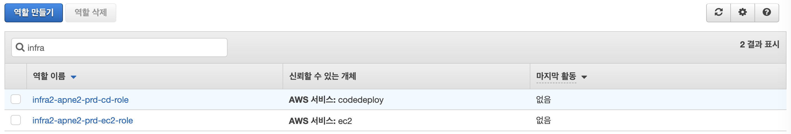
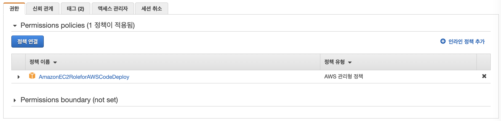
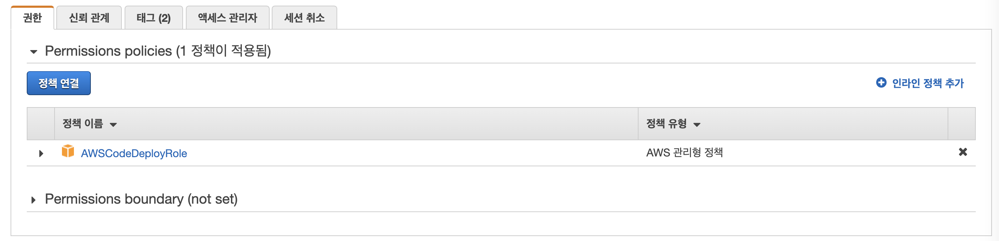

infra-2tier-basemodules
modules는 vpc, elb, iam로 구성되어 있습니다.
1. VPC
vpc와 관련 리소스 eip, internet-gateway, nat-gateway, route-table, subnet 등으로 구현되어 있습니다.
resource "aws_vpc" "vpc" { -- VPC 설정
cidr_block = var.vpc_cidr_block -- CIDR Block
...
}
resource "aws_internet_gateway" "igw" { -- Internet gateway 설정
vpc_id = aws_vpc.vpc.id -- 구축한 VPC id
...
}
resource "aws_eip" "eip" { -- Elastic ip 설정
vpc = true -- VPC
deponds_on = [ aws_internet_gateway.igw ] -- Internet gateway 참조
...
}
resource "aws_nat_gateway" "nat" { -- NAT 설정
allocation_id = aws_eip.eip.id -- eip
depends_on = [ aws_internet_gateway.igw, aws_eip.eip ] -- Internet gateway, eip 참조
...
}
2. ELB
Application Load Balancer의 기본 틀이 구현되어 있습니다.
resource "aws_alb" "alb" { -- ALB 설정
load_balancer_type = "application" -- ALB 타입
subnets = var.pub_sn_ids -- subnet
security_groups = [ aws_security_group.alb-sg.id ] -- security group
...
}
3. IAM

3.1 EC2
EC2에서 사용하는 role을 정의합니다.
resource "aws_iam_role" "codedeploy-ec2-role" {
name = "codedeploy-ec2-role"
...
}

3.2 Code-Deploy
Code-Deploy에서 사용하는 role을 정의합니다.
resource "aws_iam_role" "codedeploy-role" {
name = "codedeploy-role"
...
}
